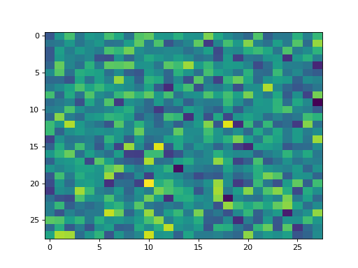
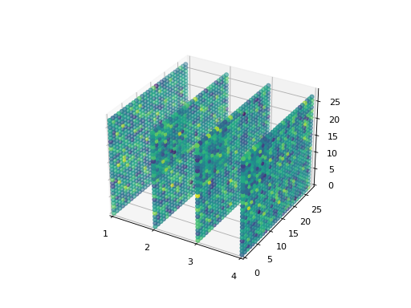
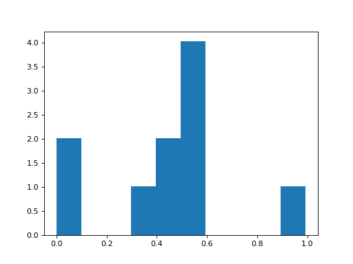
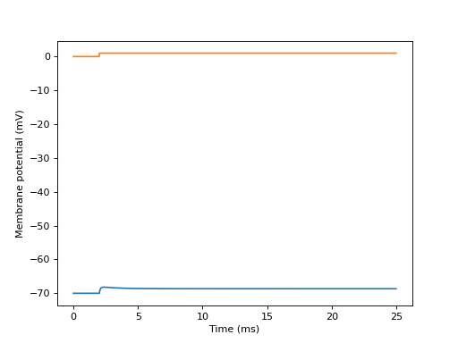
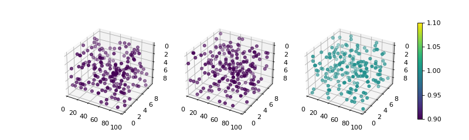
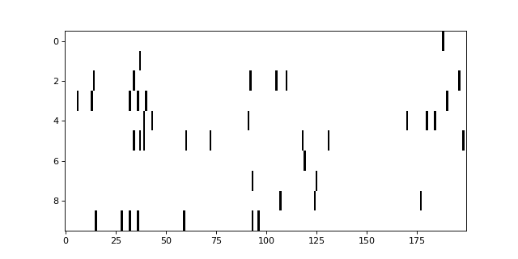

norse.torch.utils.plot.plot module¶
Utilities for plotting spikes in layers over time in 2D and 3D.
- norse.torch.utils.plot.plot.plot_heatmap_2d(data, axes=None, show_colorbar=False, **kwargs)[source]¶
Plots a heatmat of two-dimensional data
Example
>>> data = torch.randn(28, 28) >>> plot_heatmap_2d(data)
(Source code, png, hires.png, pdf)
- Parameters
data (torch.Tensor) – A tensor of data to plot in two dimensions (typically spikes with time in the first dimension and neuron id in the second).
axes (matplotlib.axes.Axes) – The matplotlib axis to plot on, if any. Defaults to
matplotlib.pyplot.gca()show_colorbar (bool) – Show a colorbar (True) or not (False).
kwargs – Specific key-value arguments to style the figure fed to the
matplotlib.pyplot.imshow()function.
- Returns
{kind=link}
{kind=link}
- norse.torch.utils.plot.plot.plot_heatmap_3d(spikes, show_colorbar=False, **kwargs)[source]¶
Plots heatmaps for some activity in several layers. Expects a named tensor with names=(‘L’, ‘X’, ‘Y’). Instead of using the
matplotlib.pyplot.imshow()matplotlib function, we make use of thematplotlib.pyplot.scatter()function to disperse points in 3d.Example
>>> import torch >>> from norse.torch.utils.plot import plot_heatmap_3d >>> data = torch.randn(4, 28, 28, names=('L', 'X', 'Y')) >>> plot_heatmap_3d(data) >>> plt.show()
(Source code, png, hires.png, pdf)
- Parameters
spikes (torch.NamedTensor) – A tensor named with four dimensions: T (time), L (layer), X, Y. Expected to be in the range \([0, 1]\).
show_colorbar (bool) – Show a colorbar (True) or not (False).
kwargs – Specific key-value arguments to style the figure fed to the
matplotlib.pyplot.scatter()function.
- Returns
An
matplotlib.axes.Axesobject
{kind=link}
{kind=link}
- norse.torch.utils.plot.plot.plot_histogram_2d(spikes, axes=None, **kwargs)[source]¶
Plots a histogram of 1-dimensional data.
Example
>>> cell = LIF() >>> data = torch.ones(10, 10) + torch.randn(10, 10) >>> spikes, state = cell(data) >>> plot_histogram_2d(state.v)
(Source code, png, hires.png, pdf)
- Parameters
data (torch.Tensor) – A tensor of single-dimensional data.
axes (matplotlib.axes.Axes) – The matplotlib axis to plot on, if any. Defaults to
matplotlib.pyplot.gca()kwargs – Specific key-value arguments to style the figure fed to the
matplotlib.pyplot.hist()function.
- Returns
{kind=link}
{kind=link}
- norse.torch.utils.plot.plot.plot_izhikevich(behavior, current=1, time_print=250, time_current=20, timestep_print=0.1)[source]¶
Computes and plots a 2D visualisation of the behavior of an Izhikevich neuron model. By default, the time window is 250ms with a time step of 0.1ms
- Example :
>>> import torch >>> from norse.torch import tonic_spiking >>> from norse.torch.utils.plot import plot_izhikevich >>> plot_izhikevich(tonic_spiking)
(Source code, png, hires.png, pdf)
- Arguments :
behavior (IzhikevichSpikingBehavior) : behavior of an Izhikevich neuron current (float) : strengh of the input current, defaults to 1 time_print (float) : size of the time window for simulation (in ms) time_current (float) : time at which the input current goes from 0 to current (in ms) timestep_print (float) : timestep of the simulation (in ms)
{kind=link}
{kind=link}
- norse.torch.utils.plot.plot.plot_scatter_3d(spikes, axes=None, show_colorbar=True, **kwargs)[source]¶
Plots spike activity in time. If multiple layers are given, the layers will be shown in subplots. Expects a named tensor in three dimensions (L, X, Y) or four, with time (T, L, X, Y).
Example
>>> distribution = torch.distributions.bernoulli.Bernoulli(torch.tensor([0.02])) >>> data = distribution.sample(sample_shape=(3, 100, 10, 10)).squeeze() >>> data.names = ('L', 'T', 'X', 'Y') >>> plot_scatter_3d(data)
(Source code, png, hires.png, pdf)
- Parameters
spikes (torch.NamedTensor) – A tensor named with four dimensions: T (time), L (layer), X, Y. Expected to be in the range \([0, 1]\).
axes (List[plt.Axes]) – A list of Axes that should have the same length as the L dimension in the spike tensor. Defaults to None, which will generate a grid for you.
show_colorbar (bool) – Show a colorbar (True) or not (False).
kwargs – Specific key-value arguments to style the figure fed to the
matplotlib.pyplot.scatter()function.
- Returns
A list of
matplotlib.axes.Axes
{kind=link}
{kind=link}
- norse.torch.utils.plot.plot.plot_spikes_2d(spikes, axes=None, **kwargs)[source]¶
Plots a 2D diagram of spikes. Works similar to the
plot_heatmap_2d()but in black and white.Example
>>> import torch >>> from norse.torch import LIF >>> from norse.torch.utils.plot import plot_spikes_2d >>> spikes, _ = LIF()(torch.randn(200, 10)) >>> plot_spikes_2d(spikes) >>> plt.show()
(Source code, png, hires.png, pdf)
- Parameters
spikes (torch.Tensor) – A tensor of spikes from a single layer in two dimensions.
axes (matplotlib.axes.Axes) – The matplotlib axis to plot on, if any. Defaults to
matplotlib.pyplot.gca()kwargs – Specific key-value arguments to style the figure fed to the
matplotlib.pyplot.imshow()function.
- Returns
An
matplotlib.axes.Axesobject
{kind=link}
{kind=link}